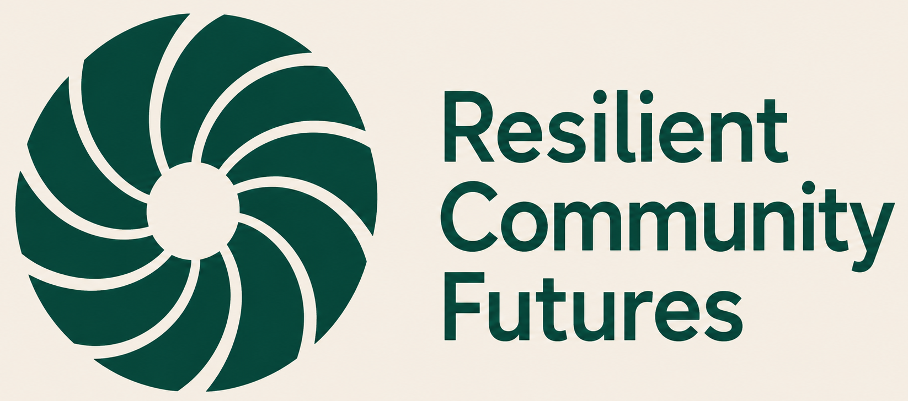

Community Energy
Supporting community organisations through feasibility, project development and delivery of renewable energy projects.

Community Energy · Resilient Infrastructure · Local Ownership
Supporting communities, local authorities and mission-led organisations to design, develop and deliver community-owned infrastructure.
What we do
Supporting community organisations through feasibility, project development and delivery of renewable energy projects.
Helping places identify practical opportunities across energy, buildings and local infrastructure to strengthen long-term resilience.
Independent engineering analysis, technical reports and evidence-based strategy for organisations working towards a just transition.
A resilient approach
Understanding communities, organisations and local challenges.
Combining engineering, economics and local knowledge to identify practical opportunities.
Supporting projects from early feasibility through implementation.
Building local capability so more value remains within communities.
Who we are
The systems that power our communities also shape local economies, relationships and opportunities.
Resilient Community Futures exists to help communities, local authorities and mission-led organisations develop infrastructure that is technically robust, environmentally responsible and rooted in local ownership and participation.
Our work sits at the intersection of engineering, community development and systems thinking. We believe resilient places are built not only through better technologies, but through stronger relationships, local capability and shared ownership.
Learn more about our approach →Latest Research & Insights
Ross Connell, Founder and Director of Resilient Community Futures, regularly publishes research, technical analysis and reflections on his personal Substack, exploring community energy, resilient infrastructure, local economies and regenerative development. His articles combine engineering practice with systems thinking to explore how communities can build stronger futures.
Reimagining Britain's electricity system through local ownership, community participation and distributed resilience.
Research InsightExploring how community ownership can create a more just, resilient and locally beneficial energy system.
Research InsightWhy rebuilding relationships, participation and local capability may matter more than simply changing technologies.
Whether you're developing a community energy project, exploring local infrastructure opportunities or looking for independent technical support, I'd be delighted to hear from you.
Get in touch